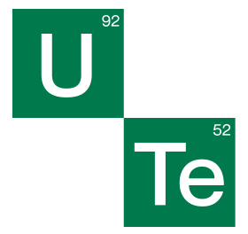
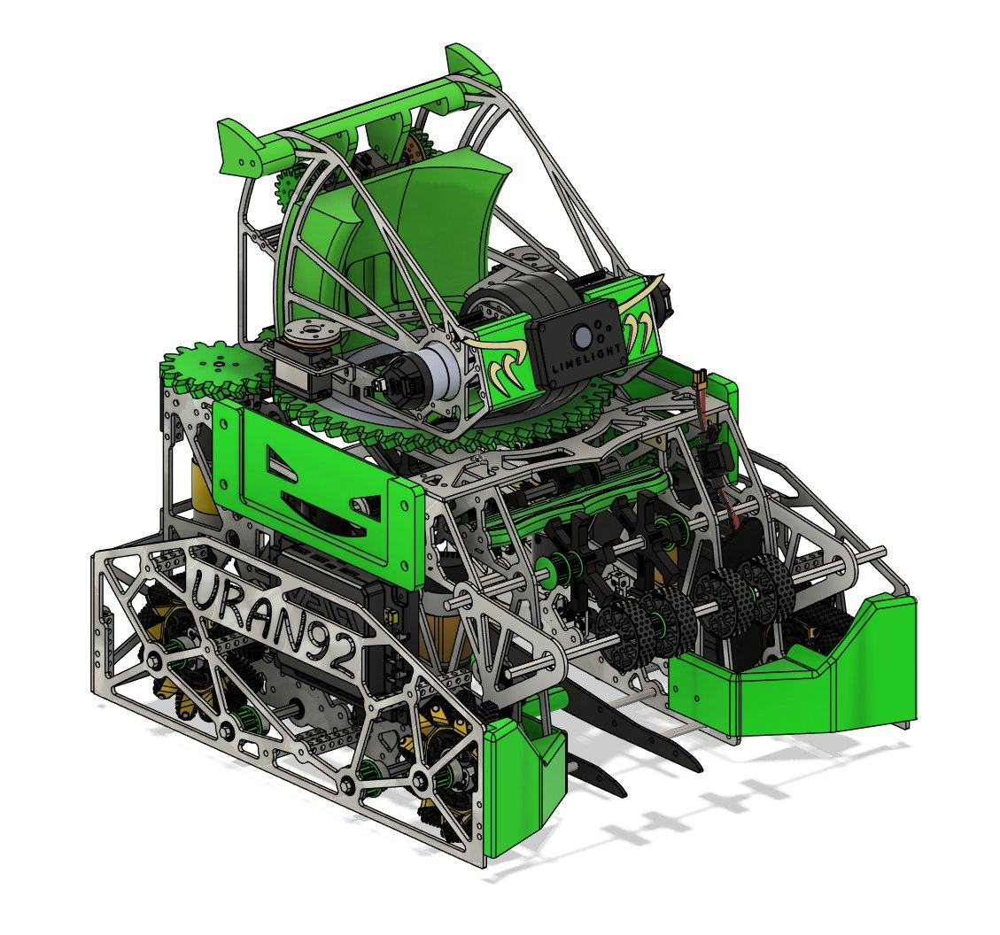
Построй
своего робота
вместе с FIRST
Мы — школьная команда из Алматы. Расскажем, как дети строят роботов, ездят на турниры по всему миру и как начать тебе.
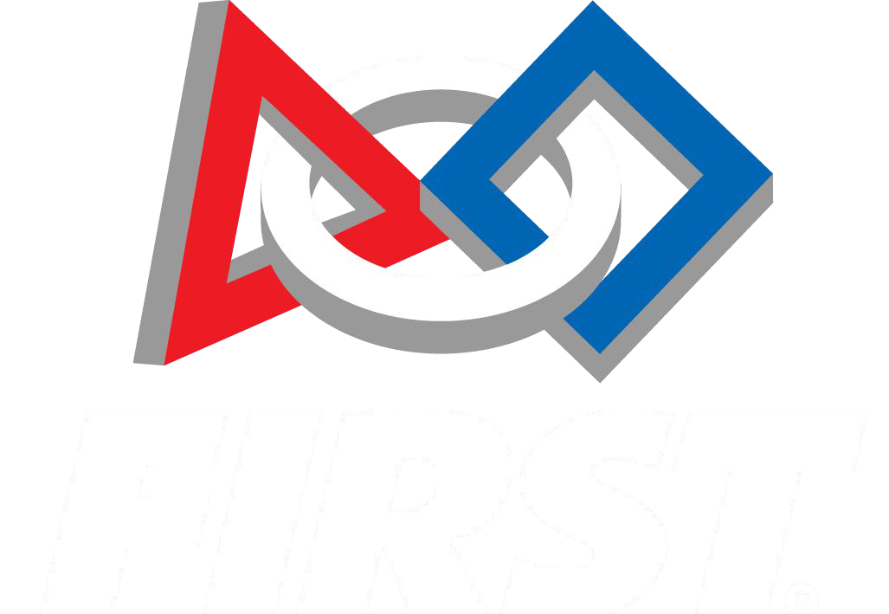
Февраль 2026, Астана, EXPO.
Чемпионат Центральной Азии FIRST
Сколько команд FTC приехало?
Нажми, чтобы узнать
команд FTC — школьники 12–18 лет
Сколько матчей сыграли в одном дивизионе?
Нажми, чтобы узнать
матчей в дивизионе Janibek за 4 дня
Сколько длится один матч?
Нажми, чтобы узнать
минуты: 30 сек робот сам + 2 мин управляем
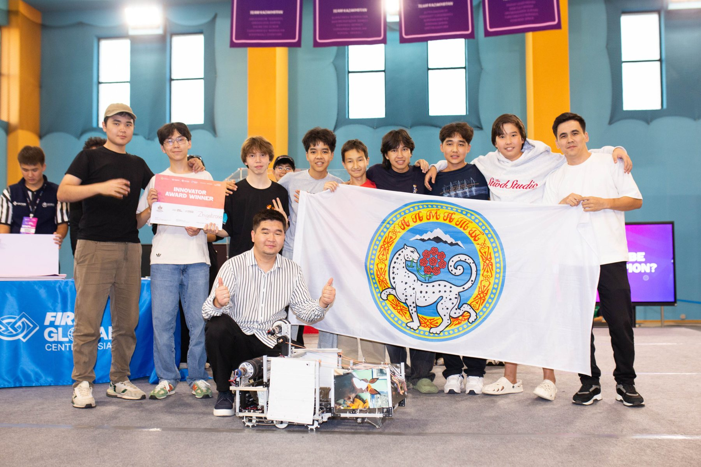
URAN 92 — команда школьников
Мы проектируем, собираем и программируем роботов для международных соревнований FIRST Tech Challenge — и помогаем другим ребятам начать.
Инженеры
придумывают и строят робота
Программисты
учат робота думать и ездить сам
Inspire
рассказывают о команде и учат других
Мы уже выступали в 4 странах
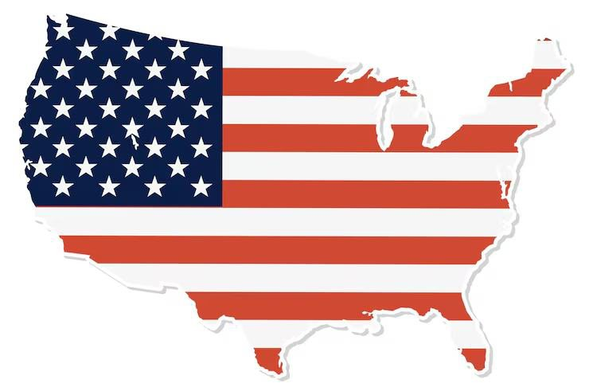
место
Robo Tourney 2025 — SoCal,
Лос-Анджелес, США
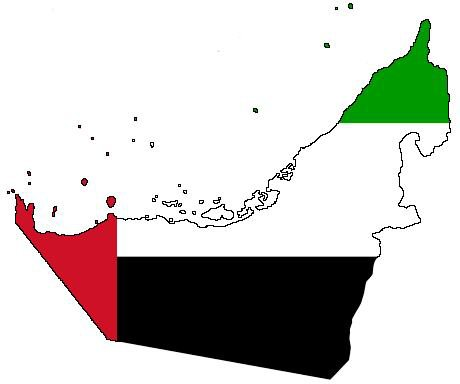
Inspire Award
FIRST Off-Season 2025,
Дубай, ОАЭ
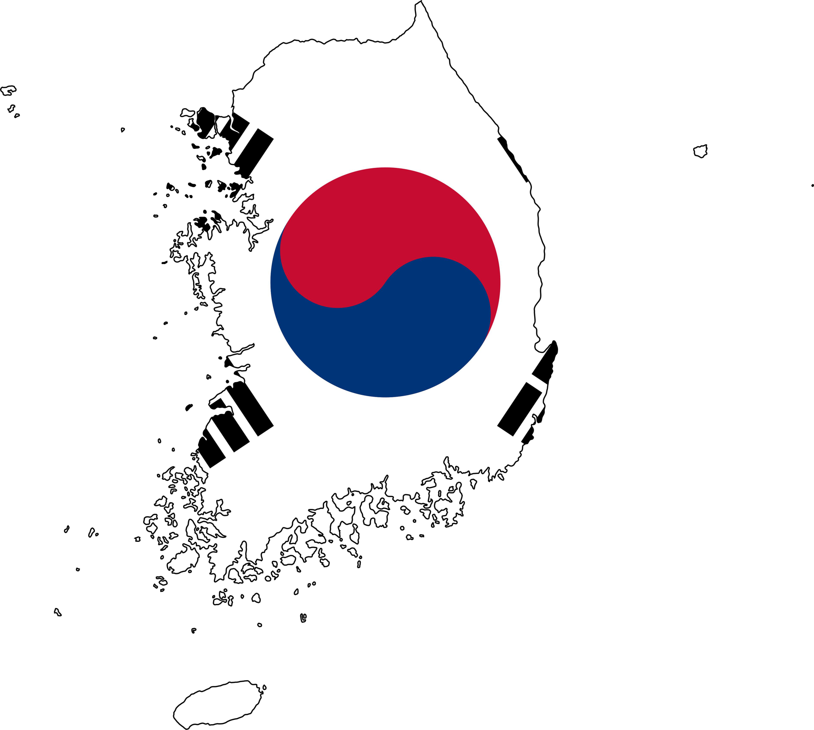
место в квалификации
FIRST Global Challenge 2026,
Инчхон — из 185 стран
Connect Award
World Robot Contest 2025,
Ханьян, Китай
в Казахстане
1 место
Mangystau Regional + Control Award
Control Award
Daryn Qualifier
Innovate Award
Almaty Tech Cup XII
Пять букв — одна большая идея
For
«для» — для всех школьников
Inspiration
вдохновение — загореться идеей
Recognition
признание — твою работу видят
Science
наука — физика, математика
Technology
технологии — роботы и код
Международная программа, где школьники со всего мира строят роботов, учатся работать в команде и выходят на мировой уровень.
Сколько тебе лет?
Три ступеньки — от игры до настоящего робота
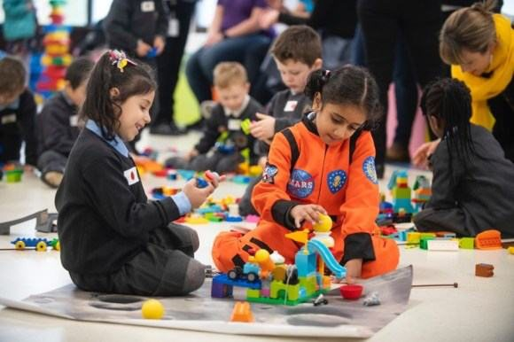
Discover
Играем с крупным LEGO DUPLO и придумываем решения вместе.
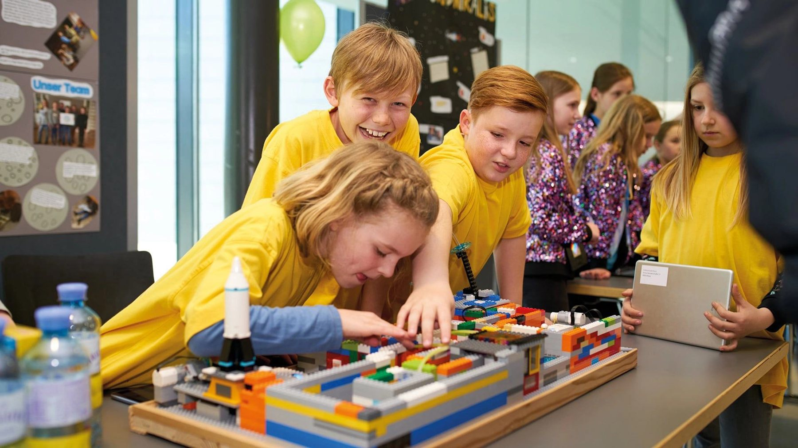
Explore
Строим модель, которая двигается, и показываем свой проект.
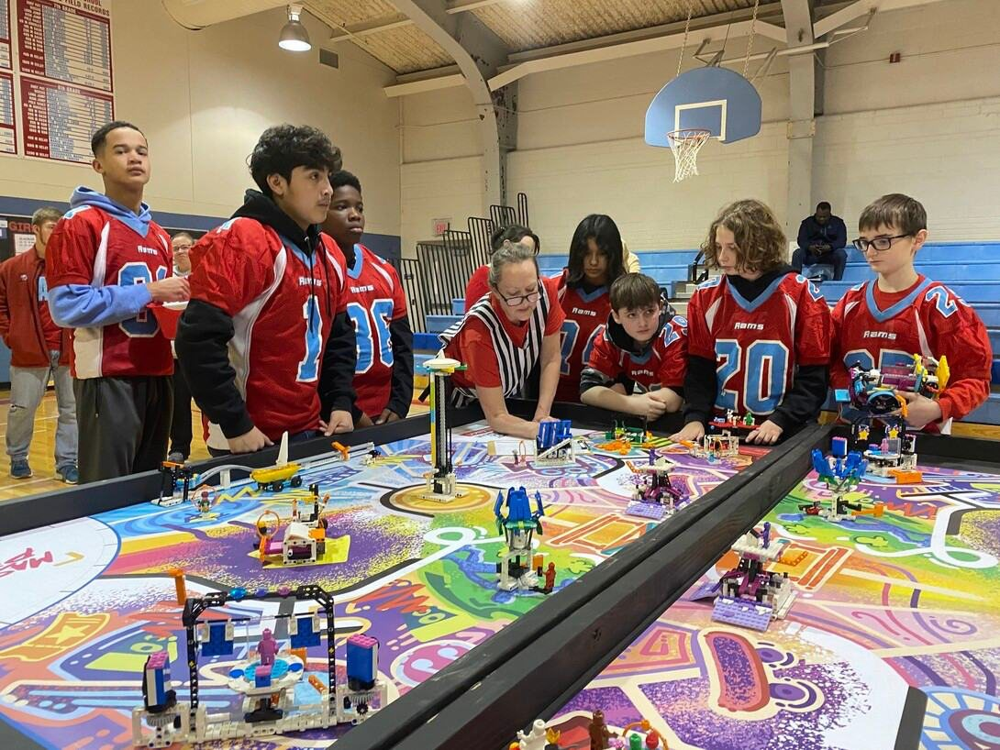
Challenge
Собираем и программируем робота, который сам выполняет задания.
Каждая ступенька готовит к следующей — а потом к FTC.
Поле с заданиями — миссиями
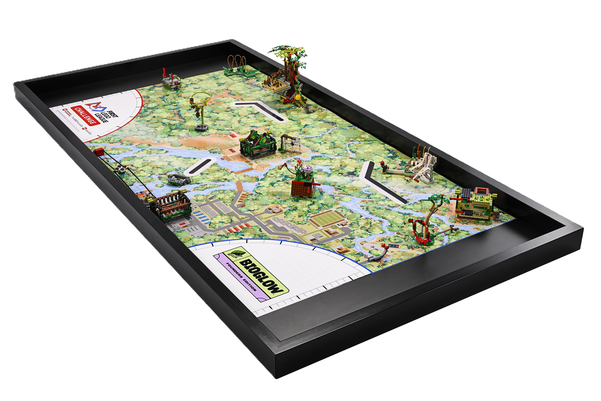
на все миссии
пульта: робот едет сам

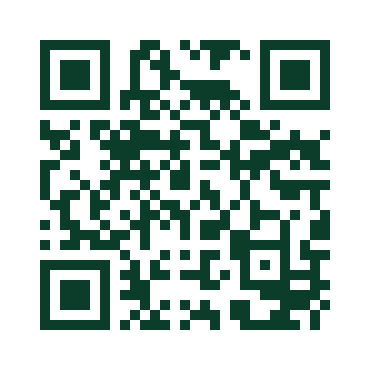
СИМУЛЯТОРПопробуй сам: наш онлайн-симулятор поля BIOGLOW — программируй робота прямо в браузере.
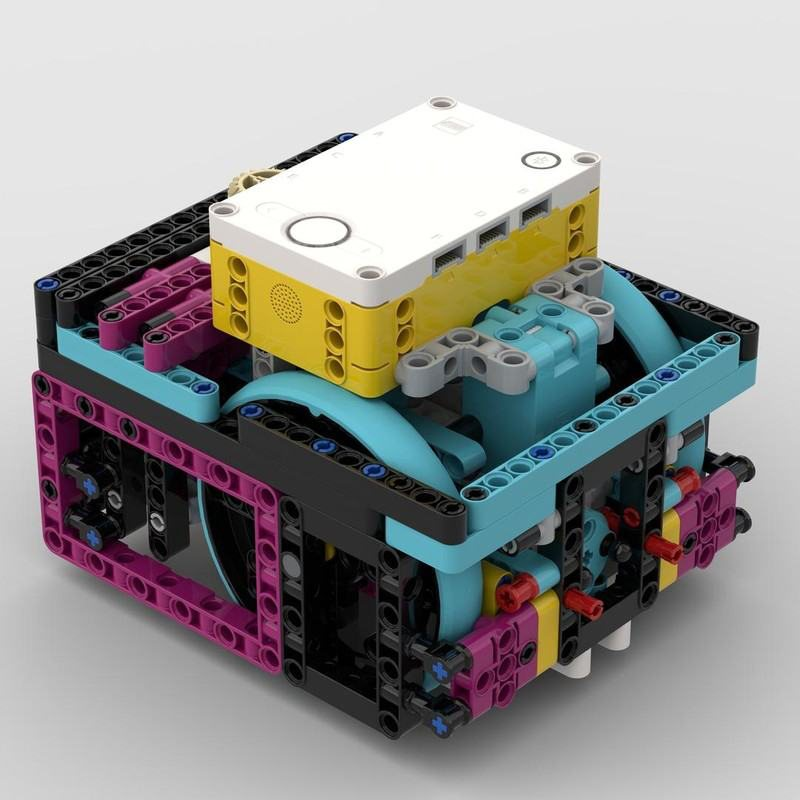
Робот — как человек
У него есть всё, что есть у нас, только из LEGO.
Мозг — хаб
жёлтый блок сверху: в нём живёт программа
Мышцы — моторы
крутят колёса и двигают захват
Глаза — датчики
видят цвет линии и расстояние
FLL и FTC: в чём разница?
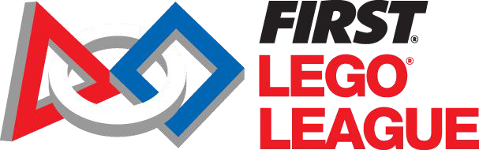
| Материал | LEGO |
| Управление | только программа |
| Поле | стол ≈ 2,4 × 1,1 м |
| Кто играет | 1 команда |
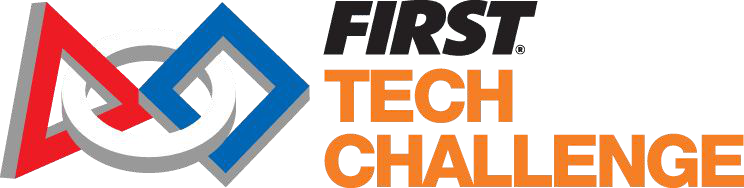
| Материал | металл, пластик, 3D-печать |
| Управление | программа + пульт |
| Поле | ≈ 3,6 × 3,6 м — как комната |
| Кто играет | 2 команды против 2 |
Робот FTC в начале матча должен влезать в куб 18 × 18 × 18 дюймов (≈ 46 см).
2 минуты 30 секунд, которые решают всё
Красный союз — 2 команды
против
Синий союз — 2 команды
Сначала рисуем в 3D — потом строим
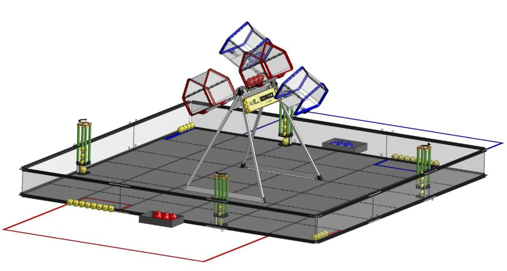
Чемпионат Центральной Азии 2026 — дивизион Janibek
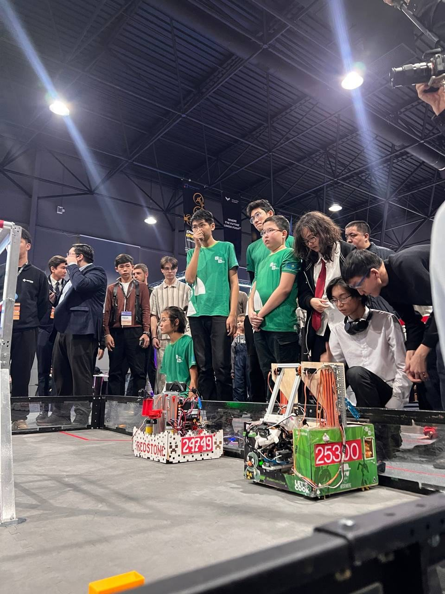
команд в дивизионе Janibek
матчей
дня соревнований
Награды получают не только за победы в матчах
JelToqSun + larpbotics
союз-победитель чемпионата
JelToqSun
за робота, проект и команду вместе
Design
лучшая конструкция
Control
лучшая программа
Innovate
самое смелое решение
Connect
связь с инженерами
Reach
помощь другим
Think
лучший инж. журнал
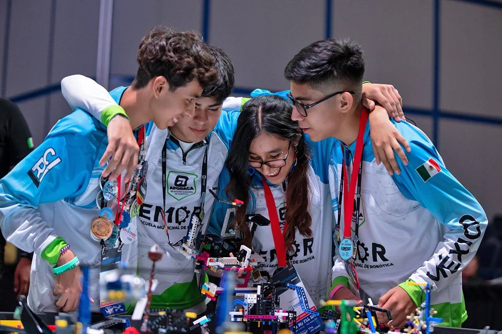
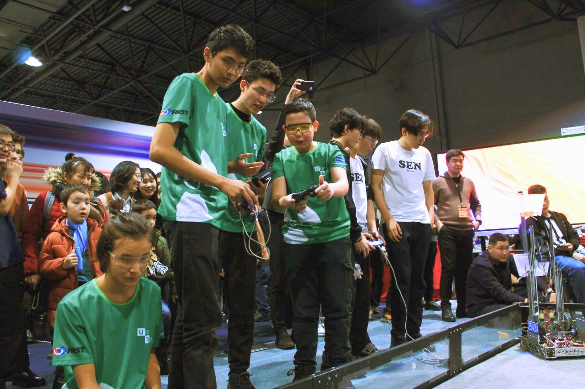
Школьники из Казахстана — чемпионы мира


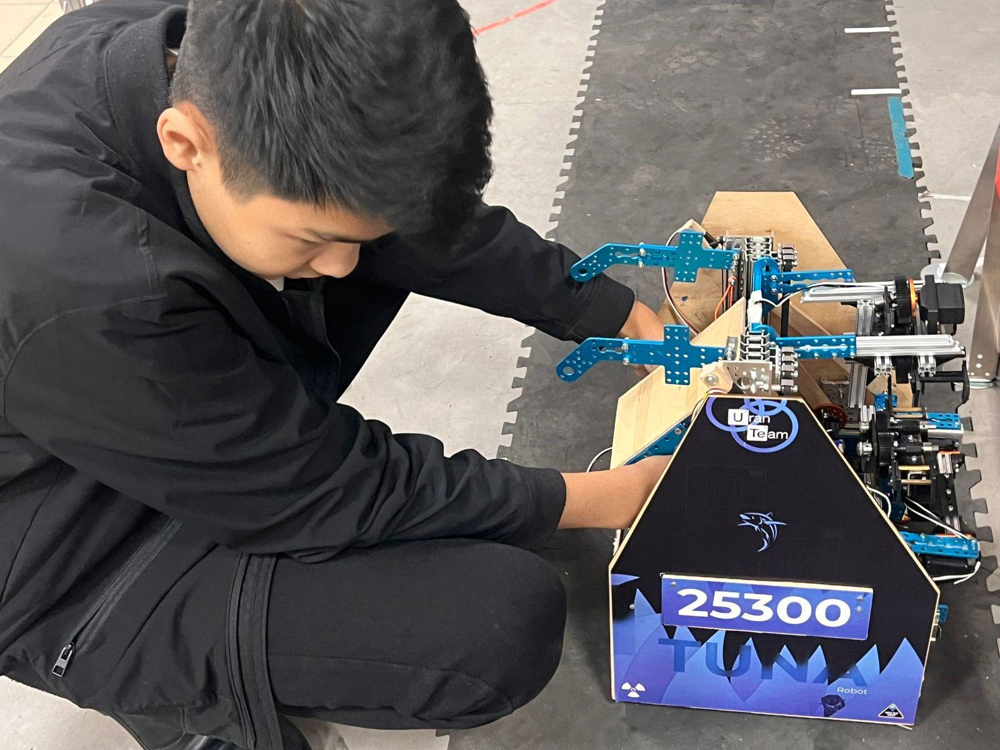
Навыки на всю жизнь
Технические
Командные
Лидерство
Твоя дорожка: от LEGO до инженера
FLL Discover
и Explore
играю и строю
FLL
Challenge
программирую робота
FTC
строю из металла,
езжу на турниры
Университет
портфолио и опыт
помогают поступить
Профессия
инженер, программист,
дизайнер, учёный
Робототехника поможет на любом пути.
Почему школе это выгодно?
STEM-направление
математика, физика, код и инженерия — в одном проекте
Международный уровень
региональные и международные турниры
Имидж и награды
победы повышают репутацию школы
Подготовка к будущему
практика, которая помогает при поступлении
5 шагов — и ты на турнире
Собрать команду
5–10 ребят
12–18 лет
Найти наставника
учитель или ментор
Зарегистрироваться
в программе FIRST — доступ к материалам сезона
Собрать робота
проект, сборка, программа
Выступить
региональные турниры → мир
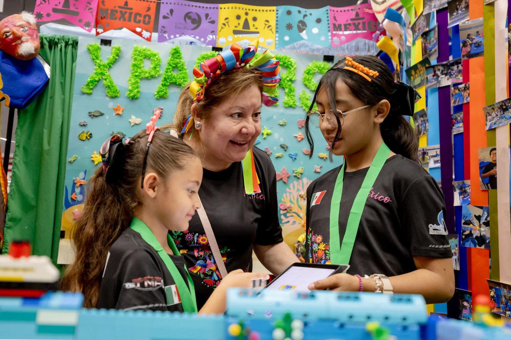
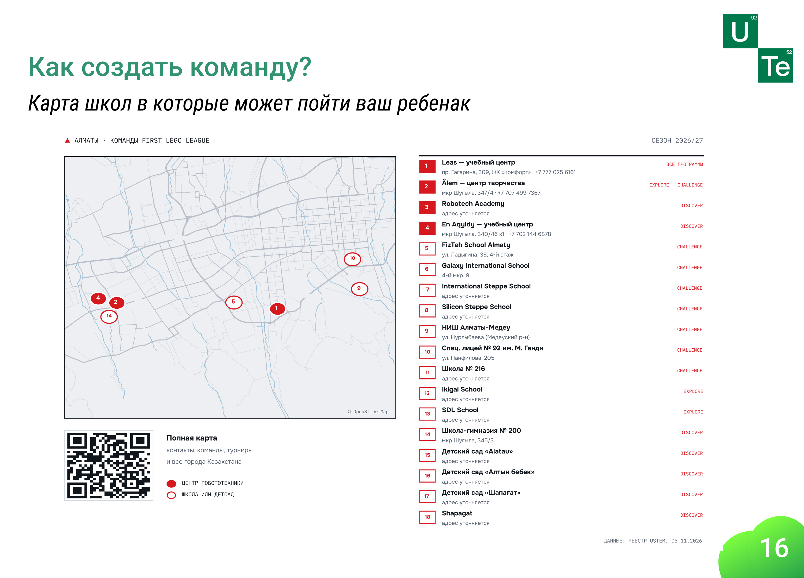
Робототехника рядом с домом
школы и центра
городов и сёл
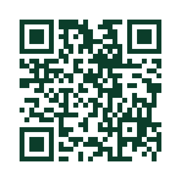
ПОЛНАЯ КАРТАfll-bioglow-sim.onrender.com/map
адреса, телефоны, возраст и программы
Правда или неправда?
В FTC роботов собирают из LEGO
Неправда
LEGO — в FLL. В FTC — металл, пластик и 3D-печать.
Первые 30 секунд матча FTC робот едет сам
Правда
Это автономный период — работает только программа.
Награды дают только за победу в матчах
Неправда
Есть награды за конструкцию, программу, журнал и помощь другим.
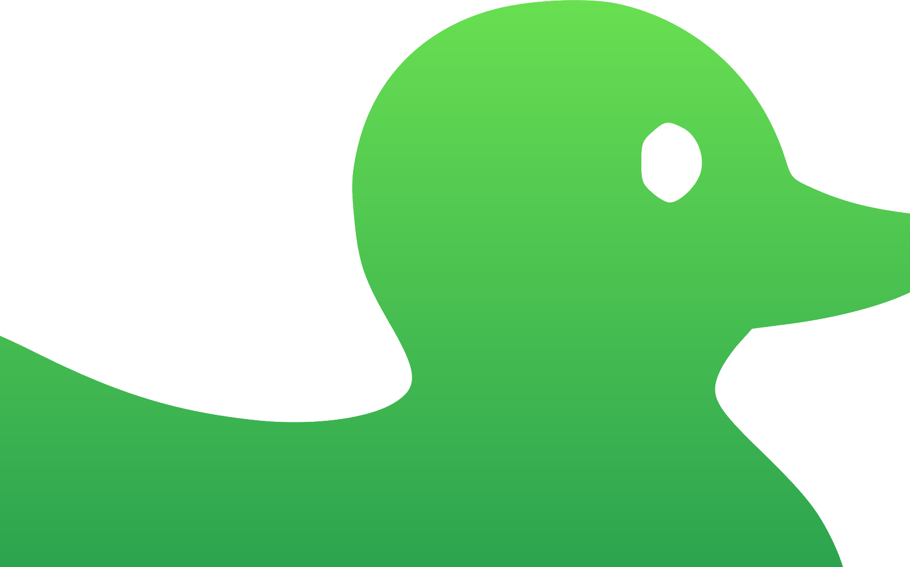
Есть вопросы?
Стань частью FIRST — начни с команды в своей школе.
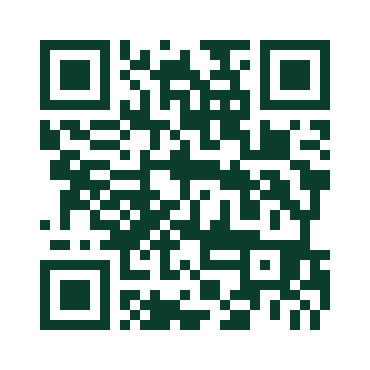
USTEM НА YOUTUBE